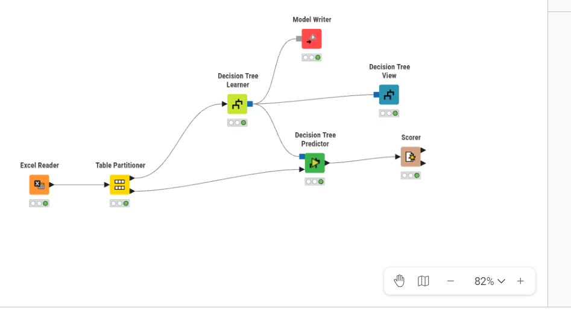
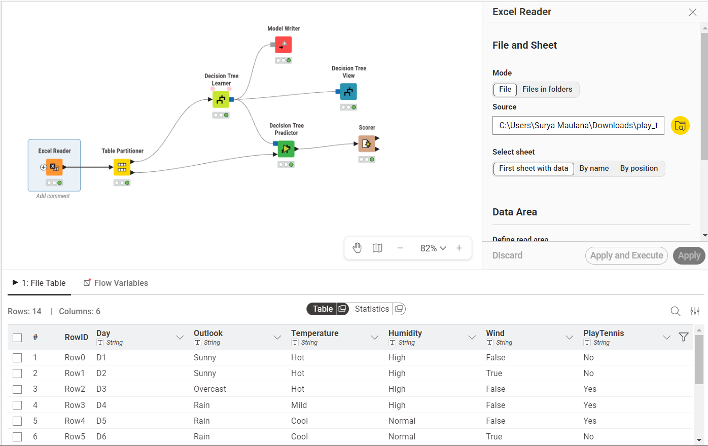
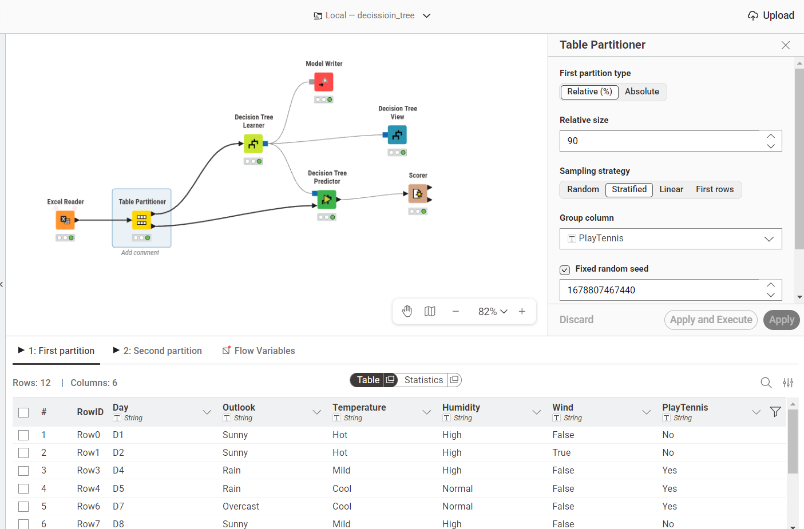
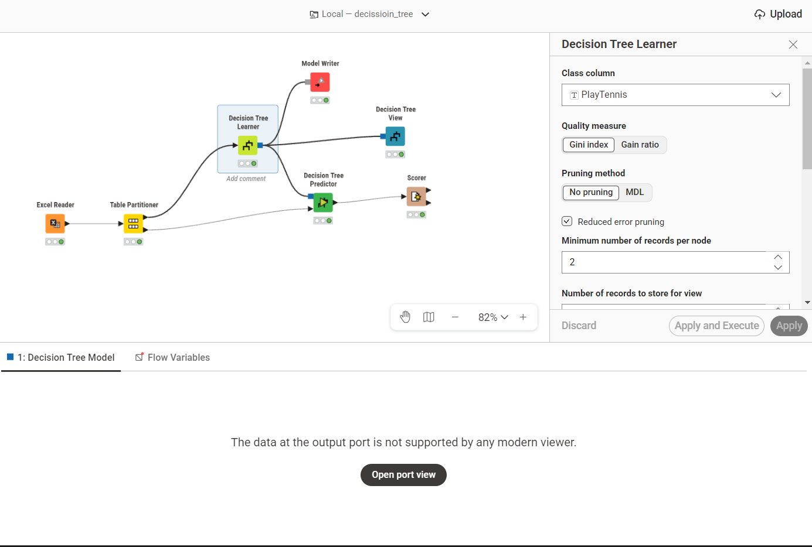
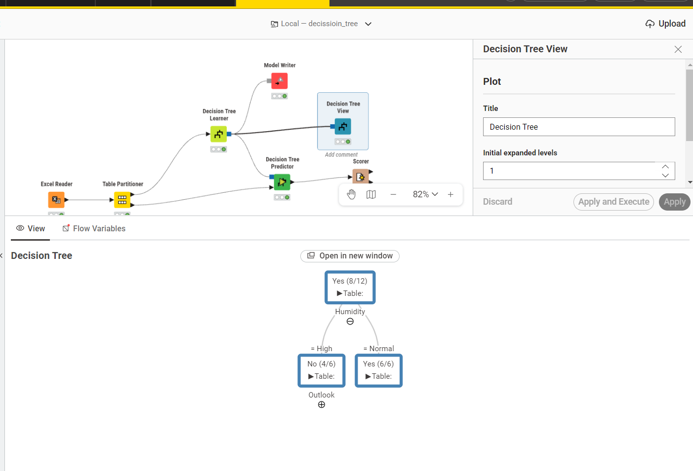
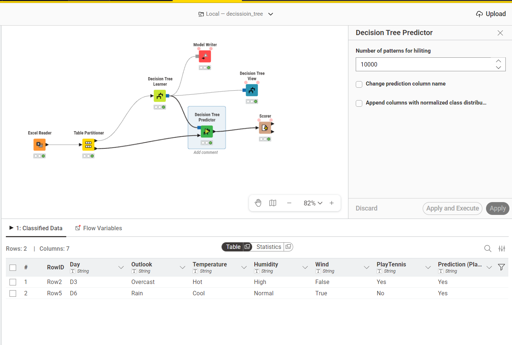
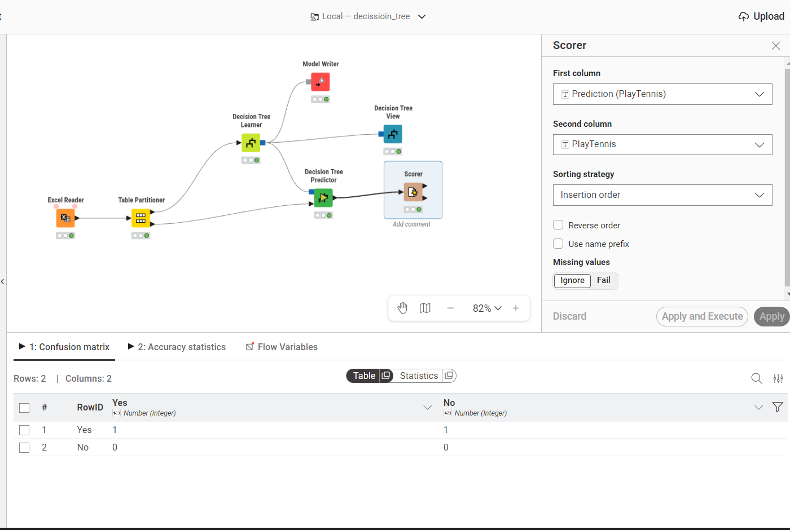

Analisis Decision Tree Menggunakan KNIME#
1. Pendahuluan#
Pada proyek ini dilakukan proses klasifikasi menggunakan algoritma Decision Tree pada platform KNIME Analytics Platform.
Decision Tree merupakan salah satu algoritma pada teknik supervised learning yang digunakan untuk melakukan prediksi berdasarkan pola dari data historis.
Algoritma ini bekerja dengan cara:
Memecah data menjadi beberapa cabang berdasarkan atribut terbaik
Membentuk struktur seperti pohon
Menghasilkan rule klasifikasi yang mudah dipahami
Pada penelitian ini, dataset dibagi menjadi:
90% data training
10% data testing
Pembagian ini bertujuan agar model memiliki data belajar yang lebih banyak sehingga mampu menemukan pola dengan lebih baik.
2. Workflow KNIME#
Berikut workflow KNIME yang digunakan:

Workflow terdiri dari beberapa node utama:
Excel Reader
Table Partitioner
Decision Tree Learner
Decision Tree Predictor
Scorer
Decision Tree View
Model Writer
3. Excel Reader#
Fungsi#
Node Excel Reader digunakan untuk membaca dataset dari file Excel ke dalam KNIME.

Dataset yang dimuat berisi:
fitur/atribut
label kelas
data training untuk proses klasifikasi
Proses yang Terjadi#
Pada tahap ini KNIME akan:
membaca file dataset
mengenali tipe data
mengubah data menjadi bentuk tabel KNIME
Alasan Menggunakan Excel Reader#
Karena dataset yang digunakan disimpan dalam format:
.xlsx
Node ini menjadi gerbang awal seluruh proses analisis.
4. Table Partitioner#
Fungsi#
Node Table Partitioner digunakan untuk membagi dataset menjadi:
data training
data testing

Konfigurasi yang Digunakan#
Pembagian Data#
90% → Training Data
10% → Testing Data
Tujuan Pembagian Data#
Training Data#
Digunakan untuk:
melatih model
mencari pola
membangun struktur pohon keputusan
Testing Data#
Digunakan untuk:
menguji performa model
mengevaluasi kemampuan prediksi
mengukur akurasi
Mengapa Menggunakan 90:10?#
Karena:
dataset relatif tidak terlalu besar
model membutuhkan lebih banyak data belajar
semakin banyak data training maka pola yang ditemukan biasanya lebih baik
Namun tetap disisakan 10% data untuk evaluasi agar model tidak hanya menghafal data training.
5. Decision Tree Learner#
Fungsi#
Node Decision Tree Learner digunakan untuk:
membangun model pohon keputusan
mencari atribut terbaik sebagai root node menggunakan Information Gain atau Gain Ratio (detail rumus pada bagian 11)
menghasilkan rule klasifikasi

Output#
Node ini menghasilkan:
model pohon keputusan
rule klasifikasi
struktur tree
6. Decision Tree View#
Fungsi#

Node ini digunakan untuk menampilkan visualisasi pohon keputusan.
Tujuan#
Agar pengguna dapat:
melihat struktur tree
melihat root node
memahami rule klasifikasi
mengetahui atribut paling penting
Hasil yang Bisa Dilihat (Interpretasi Visual)#
Berdasarkan visualisasi tree yang dihasilkan, model Decision Tree telah membentuk struktur pohon sebagai berikut:
Root Node (Node Utama): Atribut
Humidityterpilih sebagai root. Atribut ini dipilih sebagai pemecah utama karena memiliki nilai probabilitas Information Gain / Gain Ratio terbaik.Pecahan (Splits):
Jika
Humidity=Normal, maka data langsung diklasifikasikan sebagaiYessecara dominan (6/6 data di cabang ini masuk kelas Yes). Ini adalah daun yang sudah murni (pure).Jika
Humidity=High, sebagian besar masuk kelasNo(4 dari 6 data). Karena belum sepenuhnya murni, cabang ini masih dipisah lagi (membuka cabang lanjutan) dengan atribut selanjutnya, yaituOutlook.
Leaf Node (Daun Prediksi): Node terluar akan memberikan keputusan final.
Secara sederhana, rule classification yang bisa kita baca dari alur cabang tersebut adalah:
IF Humidity = Normal THEN Play Tennis = Yes
IF Humidity = High AND Outlook = ... THEN Play Tennis = ...
Rule-rule (If-Then) ini dihasilkan secara otomatis oleh model dan dapat dibaca secara intuitif untuk mengambil keputusan pada data baru.
7. Decision Tree Predictor#
Fungsi#

Node ini digunakan untuk:
melakukan prediksi pada data testing
menggunakan model dari Decision Tree Learner
Cara Kerja#
Data testing akan:
masuk ke model decision tree
mengikuti percabangan tree
menghasilkan kelas prediksi
Output#
Node ini menghasilkan kolom baru:
Prediction
yang berisi hasil prediksi model.
8. Scorer#

Fungsi#
Node Scorer digunakan untuk mengevaluasi performa model secara agregat dengan membandingkan label asli dan hasil prediksi model.
9. Model Writer#
Fungsi#
Node Model Writer digunakan untuk menyimpan model Decision Tree.
Tujuan#
Agar model dapat:
digunakan kembali
dibuka pada workflow lain
disimpan permanen
deployment model
File yang Dihasilkan#
Biasanya dalam format:
.model
10. Alur Lengkap Workflow#
Berikut urutan proses pada workflow secara visual:
Excel Reader
↓
Table Partitioner
↓
Decision Tree Learner
↓
┌───────────────┬─────────────────┐
↓ ↓ ↓
Model Writer Tree View Decision Tree Predictor
↓
Scorer
11. Rumus Matematika (Gain Ratio)#
A. Entropy#
Entropy digunakan untuk mengukur tingkat ketidakteraturan (impurity) dari suatu kumpulan data.
Rumus:
Keterangan:
k = jumlah kelas target
p_i = proporsi data pada kelas ke-i
Semakin besar entropy maka data semakin acak
Semakin kecil entropy maka data semakin homogen
B. Information Gain#
Information Gain digunakan untuk mengukur seberapa baik suatu atribut mengurangi entropy.
Rumus:
Keterangan:
A = atribut yang diuji
S_v = subset data pada cabang tertentu
|S_v| = jumlah data pada cabang
|S| = jumlah total data
Atribut dengan gain terbesar akan dipilih sebagai percabangan pohon.
C. Split Info#
Split Info digunakan untuk mengukur penyebaran data setelah proses pemisahan.
Rumus:
Keterangan:
n_i = jumlah data pada partisi ke-i
n = jumlah total data
Split Info berfungsi sebagai penalti agar algoritma tidak selalu memilih atribut dengan cabang terlalu banyak.
D. Gain Ratio#
Gain Ratio merupakan hasil akhir yang digunakan pada algoritma C4.5.
Rumus:
Atribut dengan Gain Ratio tertinggi akan dipilih menjadi root node.
12. Kelebihan dan Kekurangan Decision Tree#
Kelebihan#
Mudah dipahami dan divisualisasikan
Bisa menangani data kategorikal dan numerik
Menghasilkan rule klasifikasi yang jelas
Tidak membutuhkan normalisasi data
Relatif tahan terhadap outlier
Kekurangan#
Rentan terhadap overfitting
Struktur pohon mudah berubah jika data berubah sedikit
Bisa menghasilkan tree terlalu kompleks
Kurang optimal pada data yang sangat besar
Solusi Overfitting#
Biasanya digunakan teknik:
atau pemangkasan pohon untuk mengurangi kompleksitas model.
13. Kesimpulan#
Berdasarkan workflow yang dibuat pada KNIME:
algoritma Decision Tree berhasil membangun model klasifikasi
model mampu mempelajari pola dari data training
hasil prediksi dapat diuji menggunakan data testing
performa model dapat dievaluasi menggunakan node Scorer
Decision Tree memiliki kelebihan divisualisasikan dengan jelas dan menghasilkan rule yang gampang diinterpretasi, meskipun rentan terhadap overfitting yang bisa diatasi dengan pruning.